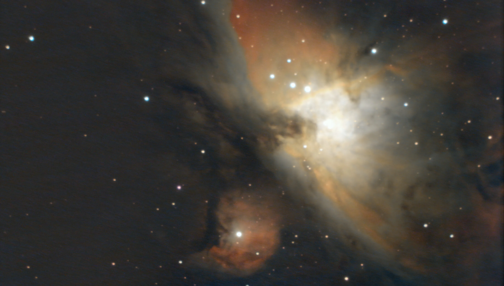

<!DOCTYPE html>
<html lang="fr"></html>
<html>
    <head>
        <title> astrono...livier </title>
        <meta charset="UTF-8">
        <meta name="viewport" content="width=device-width, initial-scale=1.0">
        <link rel="stylesheet" href="pro.css">
    </head>


    
    <body>
        <div class="cover">
                
                <h1>Olivier Tailly</h1>>
                <p>astronome amateur | astro-photographie</p>
                <p>2 ans d'experiance</p>
                
                <div style="text-align: center;">
                    <a class="contact-button" href="mailto:oliviertailly@hotmail.com"> Me contacter</a>
                </div>
                
        </div>

        <!-- section grise 1 -->
        <div class="section section-grise1">
            <div class="separateur"></div>
            <p>J'aime prendre des photos de plusieurs cible astronomique avec mon equipement d'astronomie. <b>Je posse de un celestron nexstar C5 et una camera planetaire zwo 678 couleur.</b> Je vais mettre des photo ici pour conserver des traces de ma progression! <b><i>Vous pouver me faire un virement bancaire si vous voulez soutenir ma pasion.</i></b></p>
        </div>


        <!-- section blanche-->
        <div class="section">
            <h2>En savoir plus</h2>
            
            <div class="col60 float-right" style="padding-left: 10px; box-sizing: border-box;">
                <div class="texte-ligne-vertical">
                    <p >Au cour de ses deux premiere annee,j'ai eu la chance d'assister a une magnifique eclipse solaire total. Quelque temps plus tard, jai vu des aurore boreal pendant une nuit d'observation. <b>Cetait magique!</b>Par la suite, l'hiver s'est instaler.Cela ma donner l'occation d'observer un ciel differant. Jupiter et saturne,maitre du ciel. La constelation d'orion, ma premiere cible hivernale du ciel profond.

                    <a style="padding-left: 8px;" href="PHOTO-SITE-ASTRO/en savoir plus.webp" target="_blank">En savoir plus.</a>
                </div>
            </div>
        </div>

        <!-- section grise 2 -->
        <div class="section section-grise2">
            <h2>Galerie</h2>
            <table class="col-portfolio" style="display: inline-table;">
                <tr>
                    <td><div class="barre-vertical"></div>
                    </td>

                    <td><a href="galerie-planetaire.html" target="_blank">
                    </a></td>
                </tr>

                <tr>
                    <td></td>
                    <td style="text-align: center;"><a href="galerie-planetaire.html" target="_blank"> Photo de la lune et des planettes. </a></td>
                </tr>
            </table>

            <table class="col-portfolio float-right" >
                <tr>
                    <td><div class="barre-vertical"></div></td>
                    <td><a href="galerie-ciel-profond.html" target="_blank"></a></td>
                </tr>

                <tr>
                    <td></td>
                    <td style="text-align: center;"><a href="galerie-ciel-profond.html" target="_blank"> Photo du ciel profond. </a></td>
                </tr>
            </table>
            
            

            <div class="section" style=" width: 100%; padding: 0; position: relative;">

                <div class="gal-prin1 gal-prin">

                    <h2>Aurore boreal</h2>
                        
                    <a href="galerie-aurore-boreal.html" target="_blank"></a>
                </div>

                <div class="gal-prin gal-prin2">

                    <h2>QcHsFireWeeD</h2>

                    <a href="galerie fireweed.html" target="_blank"> </a>

                </div>

            </div>

            
        </div>


         <!-- section blanche-->
         <div class="section">
            <iframe src="contect-frame.html" scrolling="no"/>
        </div>


    </body> 


    
</html>
